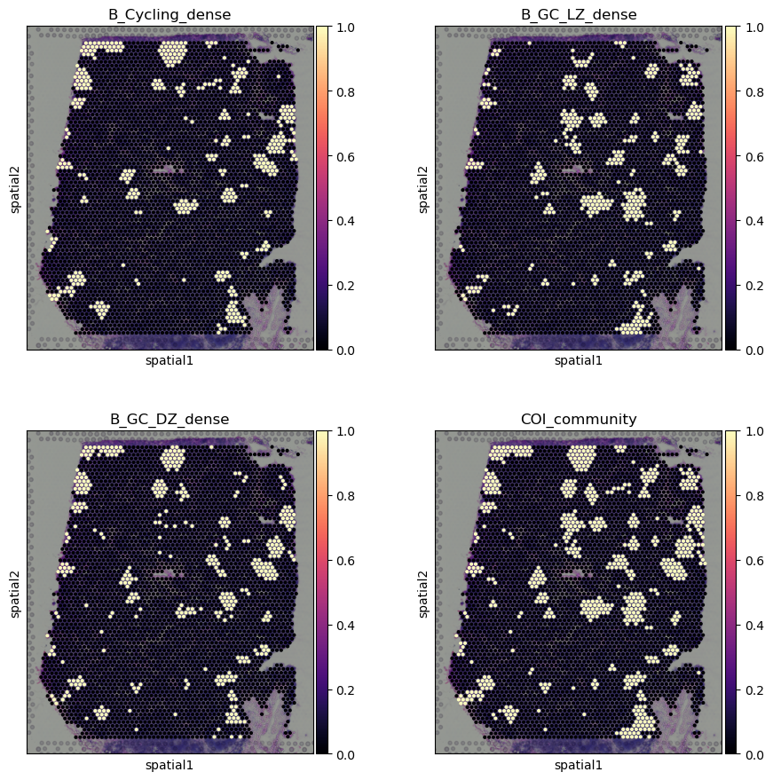
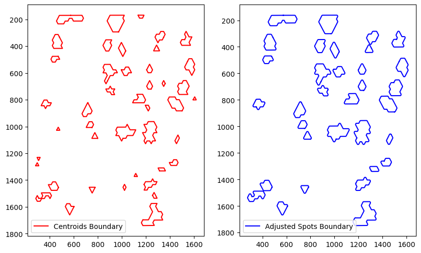
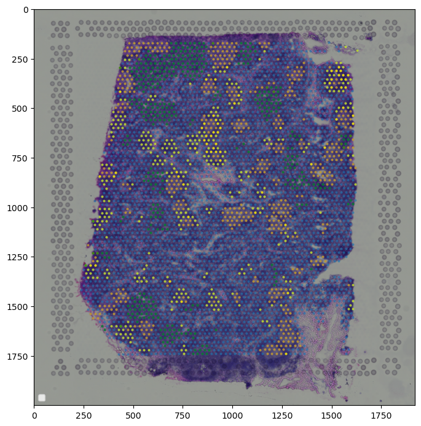
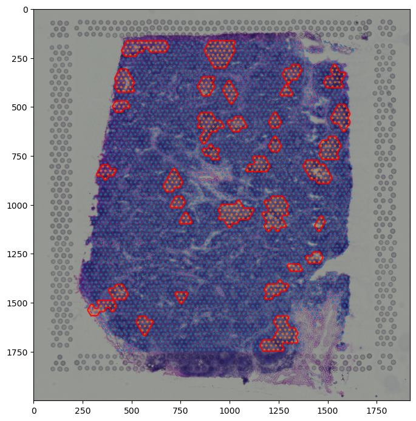
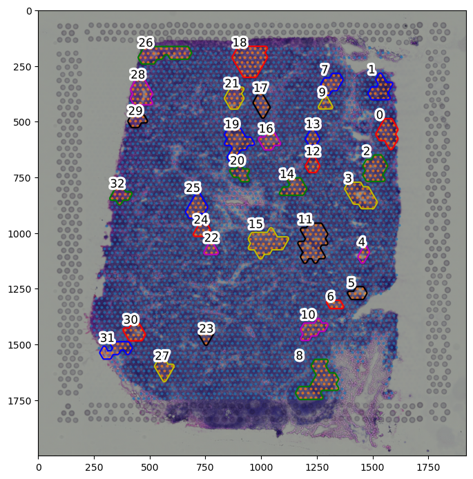
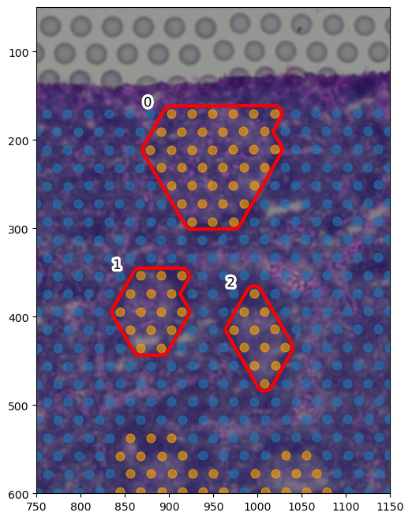
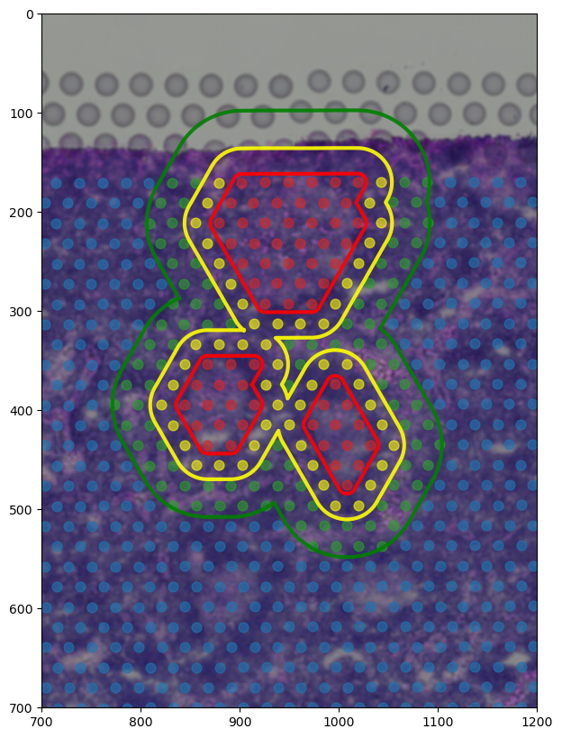
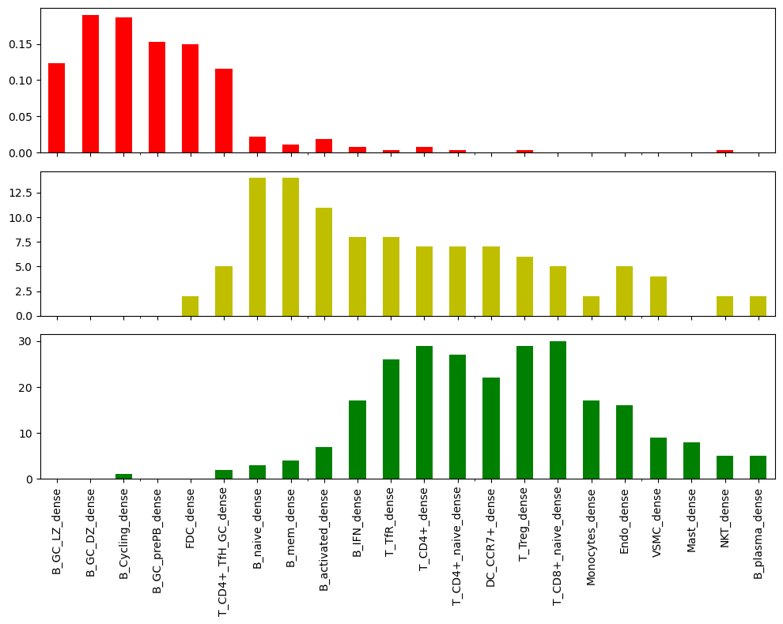

6: Visium Data Analysis
Demonstrate the usage of spatialcells for deconvoluted Visium datasets (via cell2location)
@author: Guihong Wan and Boshen Yan
@date: Feb 6 2024
@last updated: Feb 6 2024
[1]:
import pandas as pd
import matplotlib.pyplot as plt
import matplotlib as mpl
import anndata as ad
import scanpy as sc
import spatialcells as spc
Read data
[4]:
adata = ad.read_h5ad("../../data/sp_1.h5ad")
adata
[4]:
AnnData object with n_obs × n_vars = 4035 × 10217
obs: 'in_tissue', 'array_row', 'array_col', 'sample', '_indices', '_scvi_batch', '_scvi_labels'
var: 'feature_types', 'genome', 'SYMBOL', 'MT_gene'
uns: '_scvi_manager_uuid', '_scvi_uuid', 'mod', 'spatial'
obsm: 'MT', 'means_cell_abundance_w_sf', 'q05_cell_abundance_w_sf', 'q95_cell_abundance_w_sf', 'spatial', 'stds_cell_abundance_w_sf'
We use 5% quantile of the posterior distribution, representing the value of cell abundance that the model has high confidence in (aka ‘at least this amount is present’).
[5]:
adata.obs[adata.uns['mod']['factor_names']] = adata.obsm['q05_cell_abundance_w_sf']
[6]:
adata.obs.columns
[6]:
Index(['in_tissue', 'array_row', 'array_col', 'sample', '_indices',
'_scvi_batch', '_scvi_labels', 'B_Cycling', 'B_GC_DZ', 'B_GC_LZ',
'B_GC_prePB', 'B_IFN', 'B_activated', 'B_mem', 'B_naive', 'B_plasma',
'B_preGC', 'DC_CCR7+', 'DC_cDC1', 'DC_cDC2', 'DC_pDC', 'Endo', 'FDC',
'ILC', 'Macrophages_M1', 'Macrophages_M2', 'Mast', 'Monocytes', 'NK',
'NKT', 'T_CD4+', 'T_CD4+_TfH', 'T_CD4+_TfH_GC', 'T_CD4+_naive',
'T_CD8+_CD161+', 'T_CD8+_cytotoxic', 'T_CD8+_naive', 'T_TIM3+', 'T_TfR',
'T_Treg', 'VSMC'],
dtype='object')
[7]:
# find centroids of each spot, scaled according to image size in pixels to enable overlay
# tissue_hires_scalef: A scaling factor that converts pixel positions in the original, full-resolution image
# to pixel positions in tissue_hires_image.png.
scalef = adata.uns["spatial"]["V1_Human_Lymph_Node"]["scalefactors"]["tissue_hires_scalef"]
adata.obs["X_centroid"] = adata.obsm["spatial"][:, 0] * scalef
adata.obs["Y_centroid"] = adata.obsm["spatial"][:, 1] * scalef
[8]:
with mpl.rc_context({'axes.facecolor': 'black',
'figure.figsize': [4.5, 5]}):
sc.pl.spatial(adata, cmap='magma',
# show first 8 cell types
color=['B_naive', 'T_CD4+_naive', 'T_CD8+_naive',
'B_GC_DZ', 'B_GC_LZ', 'B_Cycling', 'T_CD4+_TfH_GC', 'FDC',
'B_preGC',],
ncols=3, size=1.3,
img_key='hires',
# limit color scale at 99.2% quantile of cell abundance
vmin=0, vmax='p99.2'
)

[10]:
## identify celltype-dense spots.
## dense spots are defined here as spots of more than 90% quantile in cell type abundance
adata.obs[
adata.uns['mod']['factor_names'] + "_dense"
] = adata.obs[
adata.uns['mod']['factor_names']
] > adata.obs[
adata.uns['mod']['factor_names']
].quantile(0.90)
# Here, we are interested in visualizing the spatial arrangement of germinal centers
# We located germinal centers based on germinal center specific B cell subtypes
# Which are identified by the Cell2location tutorial pipeline by Kleshchevnikov et al
adata.obs["COI_community"] = (
adata.obs["B_Cycling_dense"] |
adata.obs["B_GC_LZ_dense"] |
adata.obs["B_GC_DZ_dense"]
).astype(int)
[11]:
# plotting spots dense in B cell subtypes of interest
adata1 = adata.copy()
adata1.obs["B_Cycling_dense"] = adata1.obs["B_Cycling_dense"].astype(int)
adata1.obs["B_GC_LZ_dense"] = adata1.obs["B_GC_LZ_dense"].astype(int)
adata1.obs["B_GC_DZ_dense"] = adata1.obs["B_GC_DZ_dense"].astype(int)
with mpl.rc_context({'axes.facecolor': 'black',
'figure.figsize': [4.5, 5]}):
sc.pl.spatial(adata1, cmap='magma',
# show first 8 cell types
color=['B_Cycling_dense', 'B_GC_LZ_dense', 'B_GC_DZ_dense', "COI_community"],
ncols=2, size=1.3,
img_key='hires',
# limit color scale at 99.2% quantile of cell abundance
vmin=0, vmax='p99.2'
)

getBoundary
[12]:
eps_estims = spc.spa.estimateInitialDistance(
adata, ["COI_community"], sampling_ratio=0.2
)
eps_estims
Computing distances...
[12]:
[33.36114384870609,
93.11537188982376,
321.85548625417425,
1257.6925339706372,
3761.444077919561]
[13]:
boundary = spc.spa.getBoundary(adata, "COI_community", [1], alpha=eps_estims[0]/2)
# filter out small regions or holes based on the number of edges
# or the area of the region
spot_diameter = adata.uns["spatial"]["V1_Human_Lymph_Node"]["scalefactors"]["spot_diameter_fullres"]
spots_boundary = spc.spa.getExtendedBoundary(boundary, offset=spot_diameter * scalef / 2)
boundary1 = spc.spa.pruneSmallComponents(spots_boundary, min_edges=10, min_area=2000)
fig, [ax1, ax2] = plt.subplots(1, 2, figsize=(10,6))
spc.plt.plotBoundary(boundary, ax=ax1, color="r", label="Centroids Boundary")
ax1.invert_yaxis()
ax1.legend()
spc.plt.plotBoundary(boundary1, ax=ax2, color="b", label="Adjusted Spots Boundary")
ax2.invert_yaxis()
ax2.legend()
plt.show()

assignPointsToRegion
Using one or more generated boundaries, cells can be assigned to different regions for downstream analysis.
[29]:
help(spc.spatial.assignPointsToRegions)
Help on function assignPointsToRegions in module spatialcells.spatial._assignPointsToRegions:
assignPointsToRegions(anndata, boundaries_list, region_names, assigncolumn='region', default='BG')
Assign points to regions based on the boundaries. The region assignment is
based on the order of the boundaries, so the innermost region should be the
first element of boundaries_list.
:param anndata: Anndata object
:param boundaries_list: List of boundaries
:param region_names: List of region names. The order and length should match boundaries_list
:param assigncolumn: Column name for the region assignment
:param default: Default region name for points that are not assigned to any region
[30]:
regions = ["Germinal Center"]
boundaries_list = [boundary1]
spc.spatial.assignPointsToRegions(
adata, boundaries_list, regions, assigncolumn="region", default="Background"
)
4012it [00:01, 2839.96it/s]
Assigned points to region: Germinal Center
[31]:
print("Regions:")
print(adata.obs["region"].cat.categories)
print("\nNumber of points in each region:")
print(adata.obs["region"].value_counts())
Regions:
Index(['Germinal Center', 'Background'], dtype='object')
Number of points in each region:
region
Background 3487
Germinal Center 548
Name: count, dtype: int64
[35]:
# fig, ax = plt.subplots(figsize=(8,10))
# plt.imshow(adata.uns["spatial"]["V1_Human_Lymph_Node"]["images"]["hires"], alpha=1)
# plt.legend(loc="lower left", markerscale=5)
# plt.savefig('HnE.png', dpi=300)
[53]:
adata.obs.columns
[53]:
Index(['in_tissue', 'array_row', 'array_col', 'sample', '_indices',
'_scvi_batch', '_scvi_labels', 'B_Cycling', 'B_GC_DZ', 'B_GC_LZ',
'B_GC_prePB', 'B_IFN', 'B_activated', 'B_mem', 'B_naive', 'B_plasma',
'B_preGC', 'DC_CCR7+', 'DC_cDC1', 'DC_cDC2', 'DC_pDC', 'Endo', 'FDC',
'ILC', 'Macrophages_M1', 'Macrophages_M2', 'Mast', 'Monocytes', 'NK',
'NKT', 'T_CD4+', 'T_CD4+_TfH', 'T_CD4+_TfH_GC', 'T_CD4+_naive',
'T_CD8+_CD161+', 'T_CD8+_cytotoxic', 'T_CD8+_naive', 'T_TIM3+', 'T_TfR',
'T_Treg', 'VSMC', 'X_centroid', 'Y_centroid', 'B_Cycling_dense',
'B_GC_DZ_dense', 'B_GC_LZ_dense', 'B_GC_prePB_dense', 'B_IFN_dense',
'B_activated_dense', 'B_mem_dense', 'B_naive_dense', 'B_plasma_dense',
'B_preGC_dense', 'DC_CCR7+_dense', 'DC_cDC1_dense', 'DC_cDC2_dense',
'DC_pDC_dense', 'Endo_dense', 'FDC_dense', 'ILC_dense',
'Macrophages_M1_dense', 'Macrophages_M2_dense', 'Mast_dense',
'Monocytes_dense', 'NK_dense', 'NKT_dense', 'T_CD4+_dense',
'T_CD4+_TfH_dense', 'T_CD4+_TfH_GC_dense', 'T_CD4+_naive_dense',
'T_CD8+_CD161+_dense', 'T_CD8+_cytotoxic_dense', 'T_CD8+_naive_dense',
'T_TIM3+_dense', 'T_TfR_dense', 'T_Treg_dense', 'VSMC_dense',
'COI_community', 'region'],
dtype='object')
[111]:
# plotting spots dense in B cell subtypes of interest
adata1 = adata.copy()
adata1.obs["B_Cycling_dense"] = adata1.obs["B_Cycling_dense"].astype(int)
adata1.obs["B_GC_LZ_dense"] = adata1.obs["B_GC_LZ_dense"].astype(int)
adata1.obs["B_GC_DZ_dense"] = adata1.obs["B_GC_DZ_dense"].astype(int)
colors = ["orange", "yellow", "green", "tab:blue"]
point_size = 4
fig, ax = plt.subplots(figsize=(8,10))
plt.imshow(adata.uns["spatial"]["V1_Human_Lymph_Node"]["images"]["hires"], alpha=1)
#All
tmp = adata
ax.scatter(*zip(*tmp.obs[["X_centroid", "Y_centroid"]].to_numpy()),
s=point_size,
alpha=0.5,
color=colors[3]
)
#GC
tmp = adata[adata.obs.B_Cycling_dense|adata.obs.B_GC_LZ_dense|adata.obs.B_Cycling_dense]
ax.scatter(*zip(*tmp.obs[["X_centroid", "Y_centroid"]].to_numpy()),
s=point_size,
alpha=0.5,
color=colors[0]
)
#B native
tmp = adata[adata.obs.B_naive_dense]
ax.scatter(*zip(*tmp.obs[["X_centroid", "Y_centroid"]].to_numpy()),
s=point_size,
alpha=0.5,
color=colors[1]
)
#T native
tmp = adata[adata.obs["T_CD4+_naive_dense"]|adata.obs["T_CD8+_naive_dense"]]
ax.scatter(*zip(*tmp.obs[["X_centroid", "Y_centroid"]].to_numpy()),
s=point_size,
alpha=0.5,
color=colors[2]
)
plt.legend(loc="lower left", markerscale=5)
plt.show()
# plt.savefig('cells.png', dpi=300)
No artists with labels found to put in legend. Note that artists whose label start with an underscore are ignored when legend() is called with no argument.

[110]:
colors = ["tab:orange", "tab:blue", "tab:green", "tab:grey", "tab:red"]
point_size = 4
fig, ax = plt.subplots(figsize=(8,10))
spc.plt.plotBoundary(
boundary1, color="r", label="Germinal Center Boundary", ax=ax, alpha=0.9
)
# get points in each region in order
for i, region in enumerate(adata.obs["region"].cat.categories):
tmp = adata[adata.obs.region == region]
ax.scatter(
*zip(*tmp.obs[["X_centroid", "Y_centroid"]].to_numpy()),
s=point_size,
alpha=0.5,
label=region,
color=colors[i]
)
plt.imshow(adata.uns["spatial"]["V1_Human_Lymph_Node"]["images"]["hires"], alpha=1)
# plt.legend(loc="lower left", markerscale=5)
plt.show()
# plt.savefig('GC.png', dpi=300)

[85]:
## get overall boundary
overall_boundary = spc.spa.getBoundary(adata, "in_tissue", [1], alpha=20)
# filter out small regions or holes based on the number of edges
# or the area of the region
overall_boundary = spc.spa.getExtendedBoundary(overall_boundary, offset=spot_diameter * scalef / 2)
overall_boundary1 = spc.spa.pruneSmallComponents(overall_boundary, min_edges=10, min_area=1000)
# fig, ax1 = plt.subplots(figsize=(5,6))
# spc.plt.plotBoundary(overall_boundary1, ax=ax1, color="r", label="Overall Boundary")
# ax1.legend()
# ax1.invert_yaxis()
# plt.show()
[174]:
## Helper function to get cell type counts in each region, across several columns
def getRegionCountsMean(adata, regioncol, columns):
all_counts = []
for col in columns:
counts = adata.obs.groupby(regioncol, observed=True)[col].mean()
all_counts.append(counts)
return pd.concat(all_counts, axis=1)
def getRegionCounts(adata, regioncol, columns):
all_counts = []
for col in columns:
counts = adata.obs.groupby(regioncol, observed=True)[col].sum()
all_counts.append(counts)
return pd.concat(all_counts, axis=1)
[176]:
raw_estim_mean = getRegionCountsMean(adata, "region", adata.uns['mod']['factor_names'])
percentage_dense = getRegionCounts(adata, "region", adata.uns['mod']['factor_names'] + "_dense")
[177]:
adata.uns['mod']['factor_names']
[177]:
array(['B_Cycling', 'B_GC_DZ', 'B_GC_LZ', 'B_GC_prePB', 'B_IFN',
'B_activated', 'B_mem', 'B_naive', 'B_plasma', 'B_preGC',
'DC_CCR7+', 'DC_cDC1', 'DC_cDC2', 'DC_pDC', 'Endo', 'FDC', 'ILC',
'Macrophages_M1', 'Macrophages_M2', 'Mast', 'Monocytes', 'NK',
'NKT', 'T_CD4+', 'T_CD4+_TfH', 'T_CD4+_TfH_GC', 'T_CD4+_naive',
'T_CD8+_CD161+', 'T_CD8+_cytotoxic', 'T_CD8+_naive', 'T_TIM3+',
'T_TfR', 'T_Treg', 'VSMC'], dtype=object)
[178]:
# mean estimated cell type abundance in each spot for each region
raw_estim_mean
[178]:
| B_Cycling | B_GC_DZ | B_GC_LZ | B_GC_prePB | B_IFN | B_activated | B_mem | B_naive | B_plasma | B_preGC | ... | T_CD4+_TfH | T_CD4+_TfH_GC | T_CD4+_naive | T_CD8+_CD161+ | T_CD8+_cytotoxic | T_CD8+_naive | T_TIM3+ | T_TfR | T_Treg | VSMC | |
|---|---|---|---|---|---|---|---|---|---|---|---|---|---|---|---|---|---|---|---|---|---|
| region | |||||||||||||||||||||
| Germinal Center | 3.489793 | 1.543892 | 2.812592 | 0.851064 | 0.574457 | 0.831627 | 1.312993 | 1.608901 | 0.718583 | 0.706312 | ... | 0.249425 | 1.695331 | 0.686543 | 0.198562 | 0.316849 | 0.391157 | 0.945408 | 0.515738 | 0.293817 | 0.403211 |
| Background | 0.665491 | 0.384414 | 0.509018 | 0.240387 | 0.718301 | 1.187099 | 1.957374 | 1.868405 | 1.379708 | 1.140211 | ... | 0.538775 | 0.620881 | 2.324264 | 0.471576 | 0.488169 | 1.266793 | 0.943437 | 0.662367 | 0.734309 | 0.756567 |
2 rows × 34 columns
[179]:
# percentage of spots in each region that are
# considered dense with each cell type
percentage_dense
[179]:
| B_Cycling_dense | B_GC_DZ_dense | B_GC_LZ_dense | B_GC_prePB_dense | B_IFN_dense | B_activated_dense | B_mem_dense | B_naive_dense | B_plasma_dense | B_preGC_dense | ... | T_CD4+_TfH_dense | T_CD4+_TfH_GC_dense | T_CD4+_naive_dense | T_CD8+_CD161+_dense | T_CD8+_cytotoxic_dense | T_CD8+_naive_dense | T_TIM3+_dense | T_TfR_dense | T_Treg_dense | VSMC_dense | |
|---|---|---|---|---|---|---|---|---|---|---|---|---|---|---|---|---|---|---|---|---|---|
| region | |||||||||||||||||||||
| Germinal Center | 345 | 354 | 365 | 340 | 59 | 53 | 36 | 68 | 1 | 31 | ... | 3 | 269 | 5 | 1 | 5 | 4 | 36 | 5 | 3 | 5 |
| Background | 59 | 50 | 39 | 64 | 345 | 351 | 368 | 336 | 403 | 373 | ... | 401 | 135 | 399 | 403 | 399 | 400 | 368 | 399 | 401 | 399 |
2 rows × 34 columns
[180]:
## areas (in image pixels):
print("Area of germinal centers:", spc.msmt.getRegionArea(boundary1))
print("Area of tissue sample:", spc.msmt.getRegionArea(overall_boundary1))
print(
"Percentage area of germinal centers: "
f"{(spc.msmt.getRegionArea(boundary1) / spc.msmt.getRegionArea(overall_boundary1) * 100):.2f} %"
)
Area of germinal centers: 237973.08060695932
Area of tissue sample: 1907465.6849017586
Percentage area of germinal centers: 12.48 %
[182]:
## cell type compositions
# for demo for now, only showing naive b cells
print(spc.msmt.getRegionComposition(adata, "B_naive_dense", regions=["Background"]))
print(spc.msmt.getRegionComposition(adata, "B_naive_dense", regions=["Germinal Center"]))
B_naive_dense cell_count composition
0 False 3151 0.903642
1 True 336 0.096358
B_naive_dense cell_count composition
0 False 480 0.875912
1 True 68 0.124088
[183]:
spc.msmt.getRegionComposition(
adata, "FDC_dense",
regions=["Background"],
regioncol="region"
)
[183]:
| FDC_dense | cell_count | composition | |
|---|---|---|---|
| 0 | False | 3411 | 0.978205 |
| 1 | True | 76 | 0.021795 |
[184]:
spc.msmt.getRegionComposition(
adata, "FDC_dense",
regions=["Germinal Center"],
regioncol="region"
)
[184]:
| FDC_dense | cell_count | composition | |
|---|---|---|---|
| 0 | True | 328 | 0.59854 |
| 1 | False | 220 | 0.40146 |
[185]:
adata.obs.region.value_counts()
[185]:
region
Background 3487
Germinal Center 548
Name: count, dtype: int64
[186]:
boundary_component_list = spc.spa.getComponents(boundary1)
print("Number of components:", len(boundary_component_list))
fig, ax = plt.subplots(figsize=(8, 10))
for i, region in enumerate(adata.obs["region"].cat.categories):
tmp = adata[adata.obs.region == region]
ax.scatter(
*zip(*tmp.obs[["X_centroid", "Y_centroid"]].to_numpy()),
s=point_size,
alpha=0.6,
label=region,
color=colors[i]
)
spc.plt.plotRegions(
boundary_component_list,
colors_list=["r", "b", "g", "y", "m", "k"],
x_offset=1,
y_offset=1,
ax=ax,
)
ax.imshow(adata.uns["spatial"]["V1_Human_Lymph_Node"]["images"]["hires"], alpha=1)
# ax.invert_yaxis()
plt.show()
Number of components: 33

[187]:
colors = ["orange", "tab:blue", "green", "tab:blue"]
# draw only the 3 germinal centers highlighted in the original paper
selected_center_boundaries = [
boundary_component_list[18],
boundary_component_list[21],
boundary_component_list[17]
]
fig, ax = plt.subplots(figsize=(8, 8))
for i, region in enumerate(adata.obs["region"].cat.categories):
tmp = adata[adata.obs.region == region]
ax.scatter(
*zip(*tmp.obs[["X_centroid", "Y_centroid"]].to_numpy()),
s=spot_diameter * scalef * 4,
alpha=0.6,
label=region,
color=colors[i]
)
spc.plt.plotRegions(
selected_center_boundaries,
colors_list=["r", "r", "r", "y", "m", "k"],
x_offset=1,
y_offset=1,
ax=ax,
linewidth=3,
)
ax.imshow(adata.uns["spatial"]["V1_Human_Lymph_Node"]["images"]["hires"], alpha=1)
ax.set_ylim(600, 50)
ax.set_xlim(750, 1150)
# ax.legend()
# ax.invert_yaxis()
plt.show()

[189]:
from shapely import MultiPolygon
example_centers_boundary = MultiPolygon([
boundary_component_list[17].geoms[0],
boundary_component_list[18].geoms[0],
boundary_component_list[21].geoms[0],
])
extended_boundary = spc.spa.getExtendedBoundary(example_centers_boundary, offset=spot_diameter * scalef * 1.7)
extended_boundary2 = spc.spa.getExtendedBoundary(extended_boundary, offset=spot_diameter * scalef * 2.5)
regions1 = ["Germinal Center", "Extended Boundary", "Extended Boundary 2"]
boundaries_list1 = [example_centers_boundary, extended_boundary, extended_boundary2]
spc.spatial.assignPointsToRegions(
adata, boundaries_list1, regions1, assigncolumn="selectRegion", default="Background"
)
fig, ax = plt.subplots(figsize=(8, 10))
# colors = [ "tab:red","tab:blue", "tab:blue", "tab:blue"]
colors = [ "tab:red","yellow", "tab:green", "tab:blue"]
for i, region in enumerate(adata.obs["selectRegion"].cat.categories):
tmp = adata[adata.obs["selectRegion"] == region]
ax.scatter(
*zip(*tmp.obs[["X_centroid", "Y_centroid"]].to_numpy()),
s=spot_diameter * scalef * 4,
alpha=0.6,
label=region,
color=colors[i]
)
spc.plt.plotBoundary(
example_centers_boundary, color="r", label="Germinal Center Boundary", ax=ax, alpha=0.9, linewidth=3
)
spc.plt.plotBoundary(
extended_boundary, color="yellow", label="Extended Boundary", ax=ax, alpha=0.9, linewidth=3
)
spc.plt.plotBoundary(
extended_boundary2, color="g", label="Extended Boundary 2", ax=ax, alpha=0.9, linewidth=3
)
ax.invert_yaxis()
# ax.legend()
ax.imshow(adata.uns["spatial"]["V1_Human_Lymph_Node"]["images"]["hires"], alpha=1)
ax.set_ylim(700, 0)
ax.set_xlim(700, 1200)
plt.show()
136it [00:00, 13150.41it/s]
Assigned points to region: Germinal Center
0it [00:00, ?it/s]
114it [00:00, 14200.25it/s]
Assigned points to region: Extended Boundary
160it [00:00, 18058.46it/s]
Assigned points to region: Extended Boundary 2

[190]:
select_raw_estim_mean = getRegionCounts(adata, "selectRegion", adata.uns['mod']['factor_names'])
select_percentage_dense = getRegionCounts(adata, "selectRegion", adata.uns['mod']['factor_names'] + "_dense")
[191]:
select_raw_estim_mean
[191]:
| B_Cycling | B_GC_DZ | B_GC_LZ | B_GC_prePB | B_IFN | B_activated | B_mem | B_naive | B_plasma | B_preGC | ... | T_CD4+_TfH | T_CD4+_TfH_GC | T_CD4+_naive | T_CD8+_CD161+ | T_CD8+_cytotoxic | T_CD8+_naive | T_TIM3+ | T_TfR | T_Treg | VSMC | |
|---|---|---|---|---|---|---|---|---|---|---|---|---|---|---|---|---|---|---|---|---|---|
| selectRegion | |||||||||||||||||||||
| Germinal Center | 286.902964 | 113.064673 | 159.679207 | 51.245447 | 23.273735 | 43.106062 | 66.509449 | 79.642546 | 51.496140 | 49.612274 | ... | 17.269178 | 111.767758 | 52.921448 | 12.987905 | 18.707585 | 29.394039 | 61.963411 | 37.720135 | 21.032434 | 25.728872 |
| Extended Boundary | 46.554121 | 27.333019 | 40.321693 | 16.738548 | 40.212077 | 71.434094 | 154.702069 | 140.014732 | 48.803659 | 74.105153 | ... | 26.607056 | 49.270372 | 125.810323 | 21.887633 | 22.388177 | 66.206820 | 52.500484 | 41.552343 | 41.759977 | 34.385885 |
| Extended Boundary 2 | 87.158340 | 32.426226 | 39.669068 | 24.924477 | 99.335584 | 88.471167 | 144.949332 | 124.572365 | 118.408322 | 152.365655 | ... | 66.516513 | 61.398461 | 371.280319 | 56.007545 | 48.345026 | 195.484460 | 117.901923 | 91.279761 | 101.936597 | 74.761433 |
| Background | 3812.358491 | 2013.681578 | 3076.577213 | 1211.702830 | 2656.696160 | 4392.135409 | 7178.721235 | 7052.576379 | 4986.118130 | 4086.893288 | ... | 1905.000187 | 2871.617469 | 7930.921863 | 1662.313938 | 1786.438468 | 4340.574597 | 3575.483885 | 2421.745253 | 2556.818049 | 2724.234355 |
4 rows × 34 columns
[208]:
select_percentage_dense1 = select_percentage_dense.transpose().sort_values(["Germinal Center", "Extended Boundary"], ascending=False).transpose()
[209]:
select_percentage_dense1.columns
[209]:
Index(['B_GC_DZ_dense', 'B_Cycling_dense', 'B_GC_prePB_dense', 'FDC_dense',
'B_GC_LZ_dense', 'T_CD4+_TfH_GC_dense', 'Macrophages_M1_dense',
'DC_cDC1_dense', 'B_naive_dense', 'B_activated_dense', 'B_preGC_dense',
'T_TIM3+_dense', 'B_mem_dense', 'B_IFN_dense', 'T_CD4+_dense',
'T_TfR_dense', 'T_CD4+_naive_dense', 'T_Treg_dense', 'NKT_dense',
'NK_dense', 'DC_CCR7+_dense', 'DC_cDC2_dense', 'DC_pDC_dense',
'Endo_dense', 'T_CD8+_naive_dense', 'T_CD8+_CD161+_dense', 'VSMC_dense',
'T_CD4+_TfH_dense', 'B_plasma_dense', 'ILC_dense', 'Monocytes_dense',
'T_CD8+_cytotoxic_dense', 'Macrophages_M2_dense', 'Mast_dense'],
dtype='object')
[210]:
select_percentage_dense1 =select_percentage_dense[[
'B_GC_LZ_dense', 'B_GC_DZ_dense', 'B_Cycling_dense', 'B_GC_prePB_dense',
'FDC_dense', 'T_CD4+_TfH_GC_dense',
'B_naive_dense', 'B_mem_dense', 'B_activated_dense', 'B_IFN_dense',
'T_TfR_dense', 'T_CD4+_dense', 'T_CD4+_naive_dense','DC_CCR7+_dense',
'T_Treg_dense', 'T_CD8+_naive_dense',
'Monocytes_dense', 'Endo_dense', 'VSMC_dense','Mast_dense', 'NKT_dense', 'B_plasma_dense'
]]
[211]:
# select_percentage_dense1.loc["Germinal Center"] = select_percentage_dense1.loc["Germinal Center"]/select_percentage_dense1.loc["Germinal Center"].sum()
[213]:
fig, axs = plt.subplots(3,1, figsize=(10, 8), sharex=True)
select_percentage_dense1.loc["Germinal Center"].plot(kind="bar", ax=axs[0], color="r")
# axs[0].set_title("Germinal Center", fontsize=12)
axs[0].set_ylim([0, 55])
select_percentage_dense1.loc["Extended Boundary"].plot(kind="bar", ax=axs[1], color="y")
# axs[1].set_title("Extended Boundary Region")
axs[1].set_ylim([0, 55])
select_percentage_dense1.loc["Extended Boundary 2"].plot(kind="bar", ax=axs[2], color="g")
# axs[2].set_title("Extended Boundary 2 Region")
axs[2].set_ylim([0, 55])
# fig.set_ylabel("Percentage of Dense Spots")
# select_percentage_dense1.loc["Background"].plot(kind="bar", ax=axs[3], color="gray")
# axs[3].set_title("Background Region")
# axs[3].set_xlabel("Cell Type")
plt.tight_layout()
plt.show()

[136]:
# fig, axs = plt.subplots(4,1, figsize=(10, 8), sharex=True)
# select_percentage_dense.loc["Germinal Center"].plot(kind="bar", ax=axs[0], color="r")
# select_percentage_dense.loc["Extended Boundary"].plot(kind="bar", ax=axs[1], color="b")
# select_percentage_dense.loc["Extended Boundary 2"].plot(kind="bar", ax=axs[2], color="g")
# select_percentage_dense.loc["Background"].plot(kind="bar", ax=axs[3], color="k")
# axs[3].set_xlabel("Cell Type")
# plt.show()
[ ]: